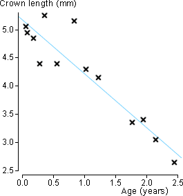
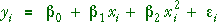
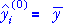
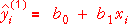
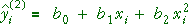
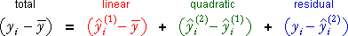
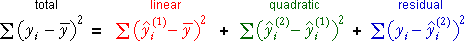

Are data linear?
Our previous analysis of the relationship between a response variable, Y, and a numerical explanatory variable, X, involved a normal linear model with

We will now use analysis of variance to examine whether the assumption of linearity is appropriate.
Teeth wear in monkeys
The scatterplot below shows the crown length of the maxillary deciduous central right incisor, one of the upper cutting teath, of 15 Macaca mulatta monkeys. The crown length decreases with age due to wear.

The least squares line is drawn on the scatterplot. There is a slight suggestion that crown lengths may be underestimated around age 1 and overestimated around age 2.5.
Is this suggestion of nonlinearity just caused by random variation?
Quadratic model
To assess linearity, we can consider a more general model that allows for some curvature. The simplest such model adds a quadratic term to the linear model,

We therefore consider a sequence of three potential models, each of which can be fitted to the data by least squares and provides fitted values.
| Model | Fitted values (predicted response) | |
|---|---|---|
| Constant |  | |
| Linear model |  | |
| Quadratic model |  |
A few comments are made here about the notation and models:
Components
Using this sequence of models of increasing complexity, we can identify how the different terms in the model improve its fit.

Sums of squares
The sums of squares of these three components obey a similar relationship when the models are fitted by least squares:

The diagram below helps to interpret the three components (and their sums of squares).
Teeth wear in monkeys
The scatterplot below shows the relationship between the crown length and age of the monkeys. The overall mean (grey), the least squares line (light blue) and best-fitting quadratic (pink) are also shown on the diagram.
Click the cross near the middle at the top of the scatterplot. Observe how the three components add to the total component. (The same relationship holds for the other crosses, but most involve a mixture of positive and negative components so the visual effect is weaker.)
Use the pop-up menu to display the linear, quadratic and residual components for all data values together on the scatterplot.